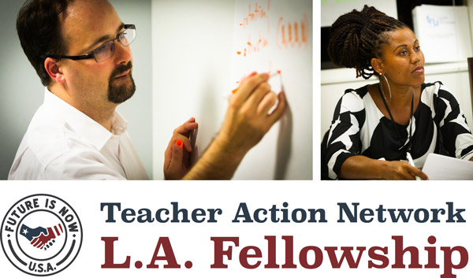

|
We're looking for teachers who want to take action in their unions, districts, and schools.

*|FNAME|* —
Are you an L.A. teacher ready to take action?
Do you want to be part of building solutions for our schools and our union?
The Teacher Action Network Fellowship supports teachers who want to take real steps to improvement in their school, LAUSD, or UTLA.
Quick Facts
- Stipend: $5,000
- Deadline: April 16, 2014
- Duration: One year
- Number of Fellows: 10-12
- Start Date: May 29, 2014
Future Is Now works with Fellows to choose their own impactful actions and follow through to implementation.
This is about more than teacher voice. By organizing around a specific action for educational change, teachers are turning their voices into a chorus. Teacher Action is about building a movement for real change.
Visit our website for more on the Fellowship and see the actions Fellows are pursuing.
Tell Your Friends
Excited? Then tell your friends:
|